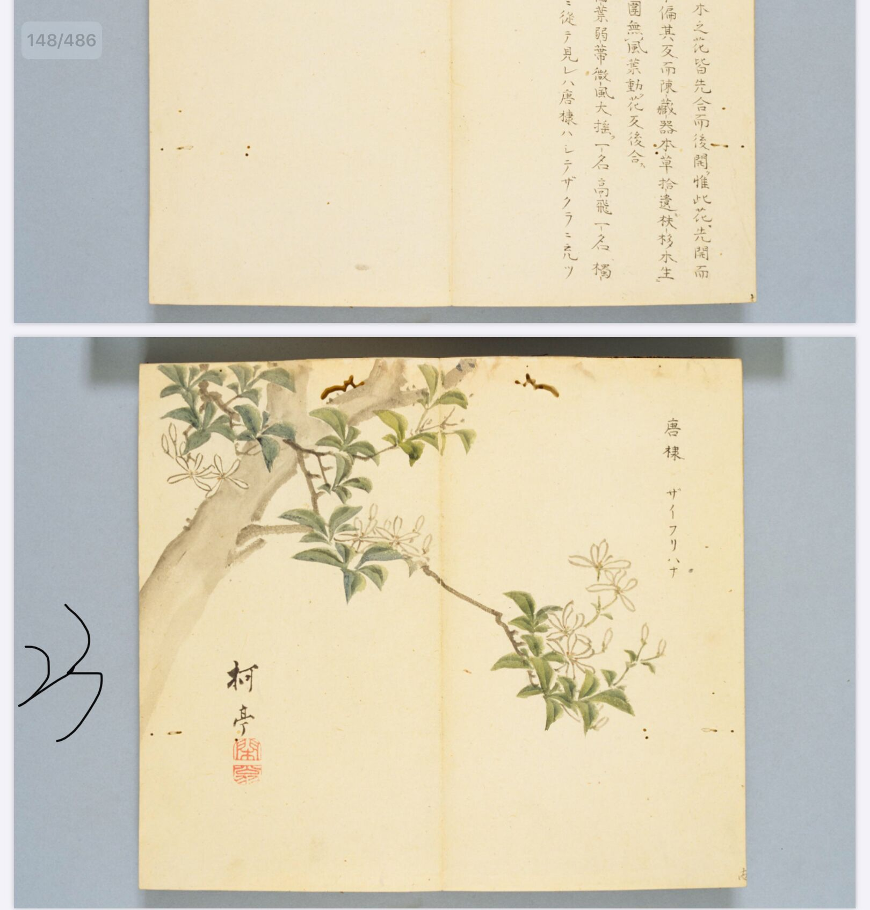

出现篇目
古代记载 《毛诗故训传》 扶苏、扶胥，小木也。（《毛传》注《山有扶苏》）
《毛诗故训传》 扶苏、扶胥，小木也。（《毛传》注《山有扶苏》）
《毛诗故训传》
扶苏、扶胥，小木也。（《毛传》注《山有扶苏》）
《毛诗正义》
毛以下章“山有乔松”是木，则扶苏是木可知，而《释木》无文。传言“扶胥，小木”者，毛当有以知之，未详其所出也。…扶胥，山木，宜生于高山。（《毛诗正义》疏《山有扶苏》）
当代记载 未有定论。
未有定论。
有学者认为“扶苏”是“朴樕”，即郭璞所谓“槲樕”，也就是今天的“槲树”。
也有学者认为“扶苏”是《诗经》中的“唐棣”。

<细井徇>